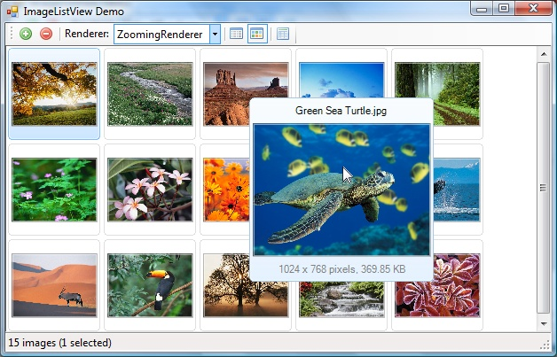
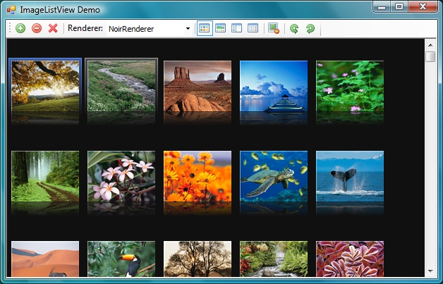

Introduction
The look of ImageListView can be customized with renderers. You can either use one of the built-in custom renderers below, or write your own custom renderer by deriving from ImageListView.ImageListViewRenderer.
Custom renderers
Built-in custom renderers
You can find these renderers in the source code and the latest binaries. To use a built-in custom renderer, use the Manina.Windows.Forms.ImageListView.SetRenderer(Manina.Windows.Forms.ImageListView.ImageListViewRenderer,System.Boolean) method as below:
myImageListView.SetRenderer(new ImageListViewRenderers.XPRenderer());
DefaultRenderer

The default renderer in action. Item states from left-to-right: selected, focused, mouse over.
XPRenderer

A renderer mimicking the Windows XP look. Item states from left-to-right: selected, focused.
TilesRenderer
You can set the size of the description area in the constructor.
// Create a new TilesRenderer and set the size
// of the description area to 180 pixels
myImageListView.SetRenderer(new ImageListViewRenderers.TilesRenderer(180));

Tiles renderer displays items with more details. Item states from top-to-bottom: selected, focused, mouse over.
ZoomingRenderer
You can set the zoom factor in the constructor.
// Create a new ZoomingRenderer and set the
// zoom factor to 50%
myImageListView.SetRenderer(new ImageListViewRenderers.ZoomingRenderer(0.5f));

Zooming renderer displays large items on mouse over.
NoirRenderer
Displays the control with a dark theme.

Noir renderer in action.
PanelRenderer
This renderer is obsolete and is no longer included in the source code. The new Pane view mode provides the functionality of PanelRenderer.
Writing a Custom Renderer
In order to write a custom renderer, derive from ImageListViewRenderer and override the virtual functions:
public MyCustomRenderer : ImageListView.ImageListViewRenderer
{
// Override virtual functions as required
}
Virtual Functions
The base renderer class ImageListViewRenderer exposes the following virtual functions.
InitializeGraphics
InitializeGraphics performs one time initialization of the Graphics used to draw the control.
public virtual void InitializeGraphics(Graphics g)
{
base.InitializeGraphics(g);
// Change the InterpolationMode to NearestNeighbor.
// This will effect all drawing operations.
g.InterpolationMode = InterpolationMode.NearestNeighbor;
}
MeasureColumnHeaderHeight
Returns the height of column headers. The base class returns the pixel height of the header font with a 2 pixel padding added.
public virtual int MeasureColumnHeaderHeight()
{
// Add 4 pixel padding to the base font height.
return ImageListView.HeaderFont.Height + 8;
}
MeasureItem
Returns the item size for the given view mode. The view mode passed to the function may be different from the current view mode of the control.
public virtual Size MeasureItem(View view)
{
if (view == View.Thumbnails)
{
// Add 4 pixel padding on all sides to the thumbnail size.
return new ImageListView.ThumbnailSize + new Size(8, 8);
}
else if (view == View.Details)
{
// Revert to base class
base.MeasureItem(view)
}
}
DrawBackground
Draws the background of the control. The base class clears the background with the background color and draws the background image, if any.
public virtual void DrawBackground(Graphics g, Rectangle bounds)
{
base.DrawBackground(g, bounds)
// Overlay a custom background image
g.DrawImage(myImage, 10, 10);
}
DrawSelectionRectangle
Draws the selection rectangle.
public virtual void DrawSelectionRectangle(Graphics g, Rectangle selection)
{
g.FillRectangle(SystemBrushes.Highlight, selection);
}
DrawItem
Draws an ImageListViewItem on the given graphics. The item state passed to the function may be different from the actual item state.
public virtual void DrawItem(Graphics g, ImageListViewItem item, ItemState state, Rectangle bounds)
{
if (ImageListViewItem.View == View.Thumbnails)
{
if((state & ItemState.Selected) != ItemState.None)
g.FillRectangle(SystemBrushes.Highlight, bounds);
g.DrawImage(item.ThumbnailImage, 4, 4);
}
else if (ImageListViewItem.View == View.Details)
{
// Revert to base class
base.DrawItem(g, item, state, bounds)
}
}
DrawColumnHeader
Draws the column headers.
public virtual void DrawColumnHeader(Graphics g, ImageListViewColumnHeader column, ColumnState state, Rectangle bounds)
{
base.DrawColumnHeader(g, column, state, bounds);
// Outline the hovered column
if((state & ColumnState.Hovered) == ColumnState.Hovered)
g.DrawRectangle(Pens.Yellow, bounds);
}
DrawColumnExtender
Draws the extender after the last column.
public virtual void DrawColumnExtender(Graphics g, Rectangle bounds)
{
// Do not draw an extender
;
}
DrawGalleryImage
Draws the large preview image of the focused item in Gallery view mode.
public virtual void DrawGalleryImage(Graphics g, ImageListViewItem item, Image image, Rectangle bounds)
{
base.DrawGalleryImage(g, item, image, bounds);
g.DrawRectangle(Pens.Black, bounds);
}
DrawPane
Draws the left pane in pane view mode. The base class draws the preview image and image metadata.
public virtual void DrawPane(Graphics g, ImageListViewItem item, Image image, Rectangle bounds)
{
;
}
DrawInsertionCaret
Draws the insertion caret for drag-and-drop operations.
public virtual void DrawInsertionCaret(Graphics g, Rectangle bounds)
{
// Draw a red caret
g.FillRectangle(Brushes.Red, bounds);
}
OnLayout
Used to affect the size of the item display area before the layout is calculated.
public virtual void OnLayout(LayoutEventArgs e)
{
// Add a 10 pixel margin to the
// left of the item display area
e.ItemAreaBounds.X += 10;
e.ItemAreaBounds.Width -= 10;
}
Dispose
Releases managed resources. You can override this method to dispose the local managed resources you created.
public virtual void Dispose()
{
base.Dispose();
// Dispose local resources
myFont.Dispose();
myBrush.Dispose();
}
Properties
ImageListViewRenderer also exposes the following public properties:
ColumnHeaderBounds
Returns the extents of the column header area.
ItemAreaBounds
Returns the extents of the item area.
ImageListView
Returns the instance of the ImageListView control owning the renderer.
Clip
When set to true, Graphics are not clipped when drawing elements. ZoomingRenderer uses this to render mouse-over items outside their bounding boxes. Defaults to false.
ItemDrawOrder
Used to set a particular draw order. Possible values are:
ItemIndex: Draw order is determined by item insertion index. (Default)ZOrder: Draw order is determined by theZOrderproperties of items.NormalSelectedHovered: Normal (neither selected nor hovered) items are drawn first, followed by selected items and hovered items.NormalHoveredSelected: Normal items are drawn first, followed by hovered items and selected items.SelectedNormalHovered: Selected items are drawn first, followed by normal items and hovered items.SelectedHoveredNormal: Selected items are drawn first, followed by hovered items and normal items.HoveredNormalSelected: Hovered items are drawn first, followed by normal items and selected items.HoveredSelectedNormal: Hovered items are drawn first, followed by selected items and normal items.